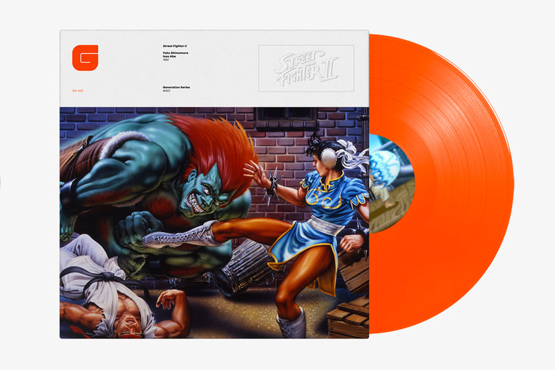

Curiosidades
Hoy queremos ofreceros una nueva curiosidad sobre los vinilos, ¿sabíais que existen bandas sonoras de videojuegos
editadas en vinilo? Simplemente, asombroso. Ya sabemos que los discos de vinilo se han convertido durante los últimos años en auténticas
joyas que coleccionan todo tipo de amantes de la música. En vinilos nos podemos encontrar todo tipo de géneros, grupos y discografías,
pero ¿y los videojuegos? ¡Pues también!
Durante los últimos tiempos se ha puesto de moda combinar la nostalgia que nos aportan videojuegos retro con la edición de sus
maravillosas bandas sonoras, nada más y nada menos que en edición disco de vinilo.
Es cierto que todos nos acordamos de míticos juegos que nos marcaron un antes y un después en nuestra concepción sobre
los videojuegos y poco recordamos las grandes bandas sonoras que acompañan la historia, la acción y los personajes.

Una de las empresas discográficas que se ha propuesto lanzar esta combinación perfecta, Data Discs, anunció que dos de los videojuegos
que lanzarían con la banda sonora en vinilo serían Street Fighter II y Shenmue. La empresa inglesa llegó a un acuerdo con SEGA para el
lanzamiento de sus bandas sonoras en la edición que más nos gusta, en disco de vinilo.
Para los amantes de uno de los juegos de lucha más importantes como Street Fighter están de enhorabuena, ya que podrán conseguir la
banda sonora en formato vinilo.
Pero tenemos más juegos de ahora que también se han sumado a rememorar el disco de vinilo como el videojuego de acción, The Last Guardian.
Los seguidores del juego podrán conseguir en edición coleccionista la banda sonora en formato vinilo que incluye hasta 19 temas del juego.

Somos muchos los que hemos nacido bajo la influencia de las míticas consolas y de los videojuegos de antaño,
por eso y porque la ocasión lo merece queremos hacer una aportación especial a nuestros amigos de la tienda de videojuegos, Retrospain,
donde podréis encontrar las últimas noticias, reviews y ofertas más especiales en videojuegos y consolas de ahora y de antes.
¡Recordad que en RetroSpain podréis encontrar el videojuego de The Last Guardian! Ahora sólo os quedaría conseguir
su magnífica banda sonora en disco de vinilo.
¡A disfrutar!